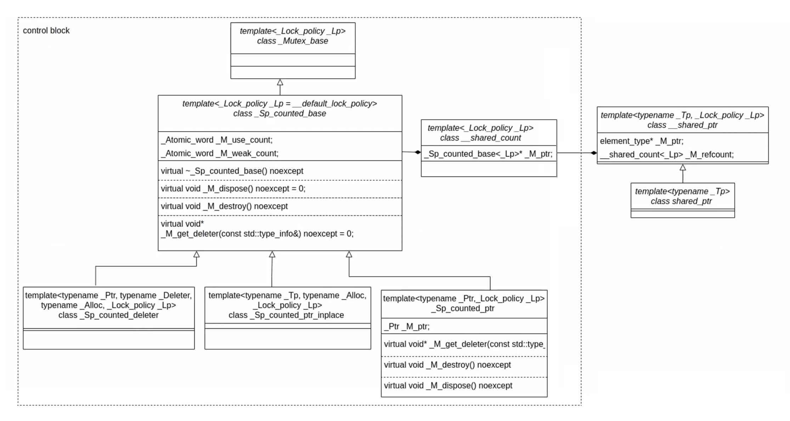

Ch09-C++ 之 point
April 28, 2022
std::unique_ptr，std::shared_ptr，std::weak_ptr。
众所周知，指针在离开作用域的时候是不会销毁资源的，当时类在离开作用域的时候，却会调用析构函数去销毁资源。因此运用类的这个特性就可以实现 RAII，完成自动初始化和自动销毁资源的功能。
使用时需要包含头文件 #include <memory>
1. std::unique_ptr #
template <typename _Tp, typename _Dp = default_delete<_Tp>>
class unique_ptr {
private:
__uniq_ptr_data<_Tp, _Dp> _M_t;
public:
template<typename _Del = deleter_type, typename = _Require<is_copy_constructible<_Del>>>
unique_ptr(pointer __p, const deleter_type& __d) noexcept : _M_t(__p, __d) {}
// 禁用了 拷贝构造 语义 和 拷贝赋值 语义
unique_ptr(const unique_ptr&) = delete;
unique_ptr& operator=(const unique_ptr&) = delete;
}
unique_ptr 是对 __uniq_ptr_data 的封装，禁用了 拷贝构造 语义 和 拷贝赋值 语义。而 __uniq_ptr_data 又继承自 __uniq_ptr_impl，到这里其实能看到 unique_ptr 对指针的管理最终是借助 tuple<pointer, DP> 实现的，first 是裸指针，second 是自定义的删除器。
template <typename _Tp, typename _Dp>
class __uniq_ptr_impl {
public:
template<typename _Del>
__uniq_ptr_impl(pointer __p, _Del&& __d) : _M_t(__p, std::forward<_Del>(__d)) {}
private:
tuple<pointer, _Dp> _M_t;
}
2. std::shared_ptr #

代码中的 _M_ptr 即为图中的 T Object，_M_refcount 即为图中的 Control Block。
shared_ptr 内部包含两个指针，一个指向对象，另一个指向控制块 (control block)，控制块中包含一个引用计数和其它一些数据。由于这个控制块需要在多个 shared_ptr 之间共享，所以它也是存在于堆中的。shared_ptr 对象本身是线程安全的，也就是说 shared_ptr 的引用计数增加和减少的操作都是原子的。
template<typename _Tp, _Lock_policy _Lp>
class __shared_ptr : public __shared_ptr_access<_Tp, _Lp> {
public:
protected:
element_type* _M_ptr; // Contained pointer.
__shared_count<_Lp> _M_refcount; // Reference counter.
2.1 control-block #
control-block 的实现如下图所示
- 如果使用
std::shared_ptr<Widget> widget(new Widget)的方式创建的 shared_ptr，原始指针会保存到_Sp_counted_ptr::_M_ptr中 - 如果使用
std::make_shared<Widget>()创建的 shared_ptr，原始指针会保存到_Sp_counted_ptr_inplace::_M_ptr。
